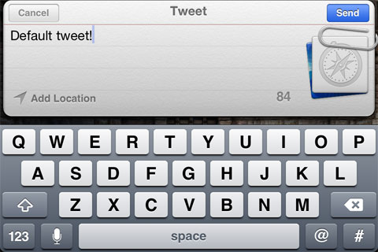

UDN
Search public documentation:
TwitterIntegrationKR
English Translation
日本語訳
中国翻译
Interested in the Unreal Engine?
Visit the Unreal Technology site.
Looking for jobs and company info?
Check out the Epic games site.
Questions about support via UDN?
Contact the UDN Staff
日本語訳
中国翻译
Interested in the Unreal Engine?
Visit the Unreal Technology site.
Looking for jobs and company info?
Check out the Epic games site.
Questions about support via UDN?
Contact the UDN Staff
UE3 홈 > PlatformInterface 프레임워크 > TwitterIntegration (트위터 통합)
TwitterIntegration (트위터 통합)
문서 변경내역: Jeff Wilson 작성. 홍성진 번역.
개요
TwitterIntegration
TwitterIntegration 클래스는 트위터에 연결하고 상호작용하기 위한 함수성이 들어있는 베이스 클래스입니다. PlatformInterfaceBase 를 상속하며, 해당 클래스에 포함되어 있는 델리게이트 시스템을 활용합니다. (PC, iOS 등) 각 플랫폼은 해당 플랫폼 전용 구현이 제공되어 있는 TwitterIntegration 에서 확장된 서브클래스를 갖고 있습니다.
함수
- Init 초기화 - 트위터 통합을 초기화시키기 위해 엔진이 호출하는 이벤트입니다.
- CanShowTweetUI 트윗 UI 표시 가능 - 사용자가 통합된 트위터 UI 를 사용할 수 있는지를 반환합니다. iOS 에서 Twitter UI 를 사용하려면 디바이스가 iOS 5 이상이어야 하고, 사용자가 디바이스에서 트위터를 사용하도록 허가한 상태여야 합니다. UI 를 사용할 수 없는 경우, TwitterRequest 메서드를 대신 사용할 수도 있습니다.
- ShowTweetUI [InitialMessage] [URL] [Picture] 트윗 UI 표시 - UI 를 표시하기 위한 플랫폼을 사용하는 트윗 전송 프로세스를 시작합니다. 사용자가 상호작용할 UI 가 표시된 경우 참을 반환(하고 FID_TweetUIComplete 델리게이트를 실행)합니다. 거짓이면 TwitterRequest 메서드를 사용해서 트위터 API 를 사용하는 수동 트윗을 할 수 있습니다.
- InitialMessage 초기 메시지 - 옵션. UI 에 표시할(, 그리고 나중에 사용자가 수정할 수 있는) 메시지를 나타내는 문자열입니다.
- URL - 옵션. 트윗에 붙일 URL 을 나타내는 문자열입니다.
- Picture 그림 - 옵션. 트윗에 추가할 그림 이름을 나타내는 문자열입니다. 현재 플랫폼 로컬에 저장된 이미지여야 합니다. 플랫폼 서브클래스가 주어진 이미지 검색을 처리합니다.
- AuthorizeAccounts 계정 인증 - 게임에서 플레이어의 트위터 정보에 접근하는 것을 허용하는 프로세스를 시작합니다. 플레이어가 트위터 앱 접근 권한을 허용해 줘야 합니다. 인증 프로세스가 시작되고 TID_AuthorizeComplete 델리게이트가 호출되면 참을 반환합니다. 델리게이트가 호출된 이후
GetNumAccounts()가 유효한 계정 수를 반환할 것입니다. - GetNumAccounts 계정 갯수 구하기 -
AuthorizeAccounts()로 인증받은 트위터 계정 수를 반환합니다. - GetAccountName [AccountIndex] 계정 이름 구하기 - 주어진 인덱스에 연결된 트위터 계정 표시명을 반환합니다.
- AccountIndex 계정 인덱스 - 표시명을 구할 트위터 계정 인덱스를 나타내는
Int입니다.
- AccountIndex 계정 인덱스 - 표시명을 구할 트위터 계정 인덱스를 나타내는
- TwitterRequest [URL] [ParamKeysAndValues] [RequestMethod] [AccountIndex] 트위터 요청 - 트위터 API 를 사용하는 일반 트위터 요청을 전송합니다. REST API Resources 트위터 문서 페이지에 모든 URL 과 파라미터에 대한 설명이 나와 있습니다.
- URL - 요청할 URL 로, http 또는 (현재 플랫폼이 https 전송을 지원한다면) https 도 가능합니다.
- ParamKeysAndValues 파라미터 키와 값 - 전송할 추가 파라미터를 나타내는 문자열 배열입니다. 키와 값은 이런 식으로 분류됩니다: < "key1", "value1", "key2", "value2" >.
- RequestMethod 요청 메서드 - 요청을 보내는 데 사용할
ETwitterRequestMethod입니다.- TRM_Get 구하기 - GET 요청 메서드를 사용해서 요청을 보냅니다.
- TRM_Post 게시하기 - POST 요청 메서드를 사용해서 요청을 보냅니다.
- TRM_Delete 지우기 - DELETE 요청 메서드를 사용해서 요청을 보냅니다.
- AccountIndex 계정 인덱스 - 요청을 전송할 트위터 계정 인덱스를 나타내는
Int입니다.
ETwitterIntegrationDelegate 열거형으로 콜백을 받을 수 있는 델리게이트 종류에 대한 ID 를 정의합니다. 델리게이트는 플랫폼 인터페이스 델리게이트 시스템을 사용해서 이들 각각에 할당할 수 있습니다.
- TID_AuthorizeComplete 인증 완료 - 이 ID 에 할당된 델리게이트는 인증 프로세스에서 응답을 받았을 때 실행됩니다.
- bSuccessful 성공 - 참이면 플레이어의 트위터 계정에 대한 접근이 허용된 것입니다.
- Data 데이터 - 데이터를 담지 않습니다.
- TID_TweetUIComplete 트위터 UI 완료 - 이 ID 에 할당된 델리게이트는 트윗 UI 가 완료되었을 때 실행됩니다.
- bSuccessful 성공 - 참이면 트윗 UI 가 성공적으로 완료된 것입니다.
- Data 데이터 - 데이터를 담지 않습니다.
- TID_RequestComplete 요청 성공 - 이 ID 에 할당된 델리게이트는 트위터 요청에 대한 응답을 받았을 때 실행됩니다.
- bSuccessful 성공 - 참이면 요청이 에러 없이 성공적으로 완료된 것입니다.
- Data 데이터 - 웹 요청의 응답 문자열을 담습니다.
구현 세부사항
-
PlatformInterfaceBase클래스의 staticGetTwitterIntegration()를 호출하여TwitterIntegration오브젝트로의 리퍼런스를 구합니다. 그런 다음 인증, 트위터 요청, 트윗 UI 콜백에 대한 델리게이트를 셋업하고, 보통PostBeginPlay()또는 트위터 함수성을 어디에 두었는지에 따라 달라지는 초기화 함수같은 곳에서 사용자의 트위터 계정을 인증합니다.var TwitterIntegration Twitter; ... Twitter = class'PlatformInterfaceBase'.static.GetTwitterIntegration(); Twitter.AddDelegate(TID_AuthorizeComplete, OnTwitterAuthorizeComplete); Twitter.AddDelegate(TID_TweetUIComplete, OnTweetComplete); Twitter.AddDelegate(TID_RequestComplete, OnTwitterRequestComplete); Twitter.AuthorizeAccounts();
AuthorizeAccounts()는 사용자가 트위터 사용을 이미 허가하지 않은 경우, 허가할 것인지 묻습니다.

OnTwitterAuthorizeComplete,OnTweetComplete,OnTwitterRequestComplete는 단지 예제입니다.PlatformInterfaceDelegate델리게이트의 시그너처에 일치하는 함수 이름이면 무엇이든 가능합니다.delegate PlatformInterfaceDelegate(const out PlatformInterfaceDelegateResult Result);
- 트윗 전송 프로세스를 시작하려면,
TwitterIntegration오브젝트에서CanShowTweetUI()를 호출하고,ShowTweetUI()를 사용해서 트윗 UI 를 표시하거나 필요에 따라TwitterRequest()를 사용해서 수동으로 트윗을 전송하면 됩니다.(가능하다면) 트윗 UI 를 사용자에게 보여주어 메시지를 수정할 수 있도록 합니다.local array<string> KeyValues; if (Twitter.CanShowTweetUI()) { Twitter.ShowTweetUI("Tweeting from UE3", "http://www.epicgames.com", "Icon"); } else { KeyValues.AddItem("status"); KeyValues.AddItem("Tweeting from UE3"); Twitter.TwitterRequest("http://api.twitter.com/1/statuses/update.json", KeyValues, TRM_POST, 0); }

UDKBase\Classes 디렉토리의 CloudPC.uc 스크립트에서 찾을 수 있으며, CloudGame 게임타입을 사용해서 테스트할 수 있습니다.